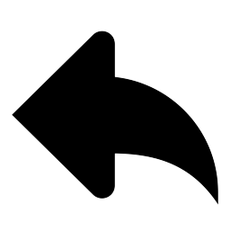

<ion-content>
  <a routerLink="/home"><ion-button id="back"></ion-button></a>
  <ion-range min="0" max="7" [(ngModel)]="leverLevel" (ionChange)="sliderLastChange()" step="1" value="0" snaps color="primary">
    <ion-icon slot="start" size="small" color="primary"></ion-icon>
    <ion-icon slot="end" color="primary"></ion-icon>
  </ion-range>
  <div id="container">
    <app-battery [Size]="Size" [UseBatteryOpacity]="UseBatteryOpacity" [UseChargeOpacity]="UseChargeOpacity"></app-battery>
    <p [style]="Info">Agora deve ir até o fim</p>
    <a routerLink="/level5"><ion-button [style]="Button"></ion-button></a>
  </div>
  </ion-content>